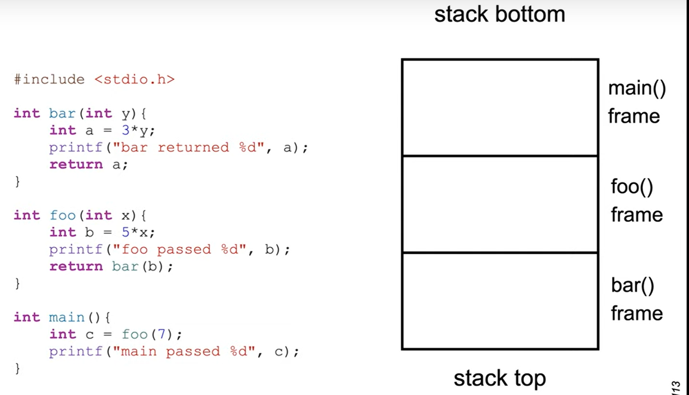

typically, the stack grows from high to low address, towards the heap
top of the stack - the lowest address which is being used (thats where the RSP register points)
while data will exist at addresses beyond the top of the stack, it is considerd undefined
what can i find on the stack?- return addresses - so a called function can return to the function that called it
- local variables
- sometimes used to pass arguments between functions
- save space for registers between different functions
- save space for registers for same function (when takes too many resources)
alloca() - dynamically alocated memory on the stack
main() is the first called, it calls foo() which calls bar()
